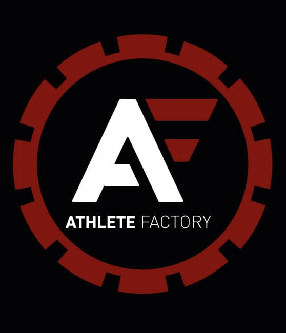
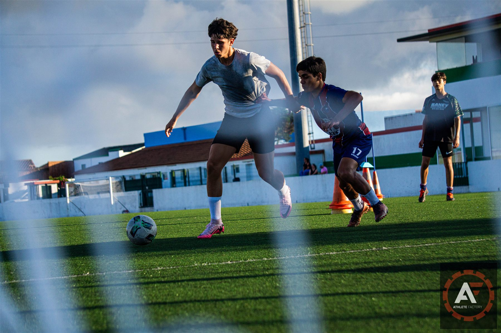
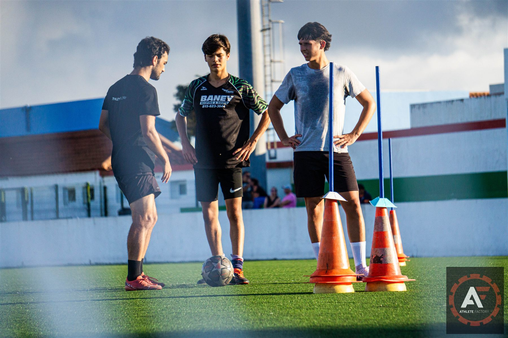
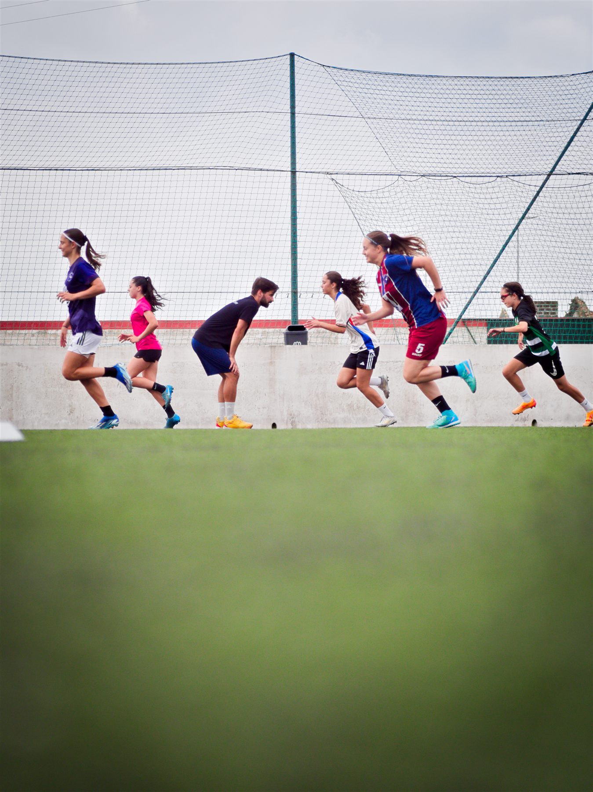
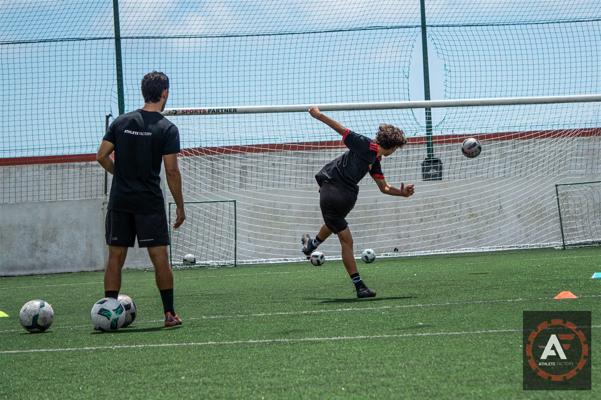
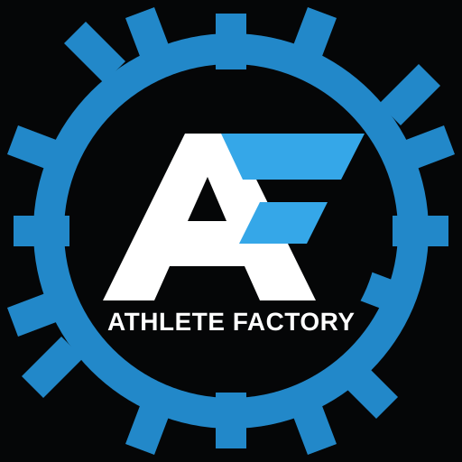

Técnico-Tático
Melhor decisão, leitura do jogo e transferência para situações reais de competição.

Athlete Factory
Athlete Factory
Preparação física para atletas. Treinos individuais e em grupos reduzidos para jogadores e jogadoras de futebol com o objetivo de desenvolver as suas capacidades técnico-táticas, físicas e psicológicas.
Sobre
Na Athlete Factory, acreditamos que todos têm potencial, só precisa ser desbloqueado. No futebol debruçamo-nos sobre 3 domínios fundamentais: técnico-tático, físico e psicológico, para promover a evolução integral dos jogadores e jogadoras.
Os nossos treinadores são especializados no desenvolvimento individual e coletivo dos atletas. Com esta base somos capazes de desbloquear e potenciar as suas habilidades, tornando-os mais confiantes dentro e fora de campo.
Melhor decisão, leitura do jogo e transferência para situações reais de competição.
Capacidade atlética para acelerar, travar, resistir e competir com intensidade.
Confiança, foco e presença para responder melhor aos momentos do jogo.
Treino
Sessões pensadas para atletas que precisam de traduzir o trabalho em rendimento real: mais qualidade na execução, melhor controlo corporal e maior disponibilidade durante toda a época.
Plano ajustado ao atleta, à posição, ao calendário competitivo e aos objetivos.
Contexto competitivo, atenção próxima e evolução com estímulo coletivo.
Trabalho técnico-tático, físico e psicológico alinhado com o jogo.
Bootcamp
Momentos de treino onde os atletas trabalham perto dos treinadores, em contexto prático, com exercícios orientados para evolução técnica, física e competitiva.




AF Run Club
Uma componente própria para quem quer correr melhor, manter consistência e evoluir com uma comunidade à volta. Treinos com foco em base aeróbia, técnica, ritmo e motivação.
Para quem é
Começa agora
Fala com a Athlete Factory para escolher o melhor formato: treino individual, pequeno grupo ou integração no AF Run Club.